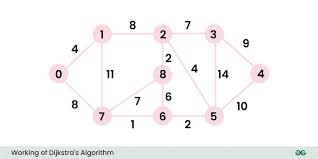

Below is a image of what it typically look like
Cool Image

Fun Fact and what it is Dijkstra's algorithm
He devised this algorithm in 20 minutes(Click the Link to learn more)
Dijkstra's algorithm is used for finding the shortest paths between nodes in a weighted graph,
I really like it because it's name is cool I like "Dijkstra's" this name is sound very fancy :)